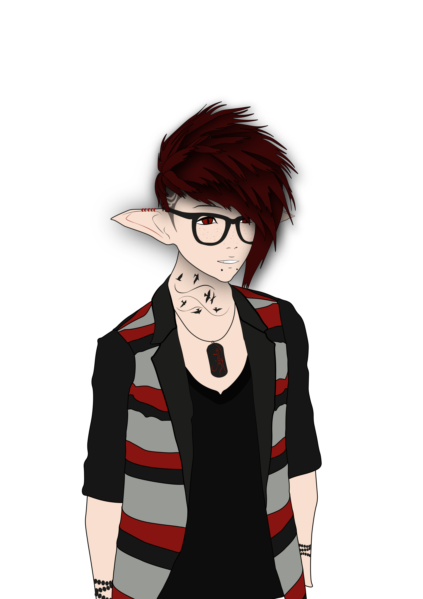

ANSION Quentin
27 rue de la République
03400 Yzeure
Tel: 06.36.36.81.51
ansion.quentin@outlook.fr
age : 21 ans
Experience et compétences
Médiatheque Gironde et Moulins Co'
Mise en page et écriture d'un journal
Entretien des lieux
Maintenance des ordinateurs
Formation de débutants à l'utilisation d'un ordinateur
Magasin maintenance informatique
Accueil clients
Informations sur les services
encaisser et rendre la monnaie
maintenance et réparation d'ordinateurs
accueil et gestion des stocks
Employé Carrefour City Bordeaux
Mise en rayon
Gestion des stocks
Approvisionnement
Facing
Encaissement
Stage fleuriste Flora Festy et Celine LAFORET
Création ou finition de bouquets
Gravure sur ruban
Conseil Departemental de l'Allier Service Communication
Créer et mettre en page des documents
Utilisation de la suite Adobe InDesign, Illustrator et Photoshop
Création de visuels
Formations
Niveau BAC S
Premiere + Terminal S
BAC STI2D - spé SIN
Spécialisation informatique (HTML, CSS)
Loisirs et Passions
Les series SCI-FI
Mangas
Jeux vidéos
Dessiner sur feuille ou tablette graphique
Faire de la guitare
Ecouter de la musique (Rock, metal, ...)